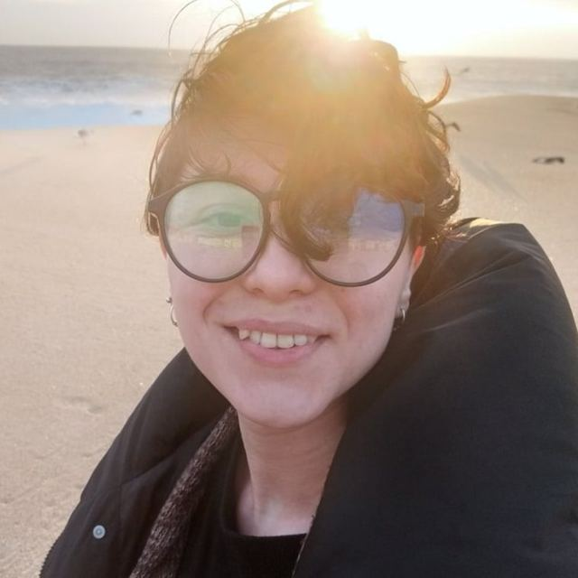

Френдли психолог · онлайн
Таисия Штеменко
Десятый год помогаю с тревожностью, личными границами, самооценкой и поиском своих желаний и ориентиров

Обо мне
Прорабатывать себя с комфортом
Со мной можно и на ты, и на вы, можно описывать свою жизнь мемами, шутить и говорить матом. Прорабатывать себя с комфортом и не бояться, что вместо работы над вашим запросом начнут «лечить» ориентацию или гендерную идентичность
Буду обращаться к вам тем именем и местоимениями, которые вам комфортны. Верю, что однажды это станет само собой разумеющимся для всех психологов, а не только опцией френдли
- На ты или на выкак вам удобнее
- Мемы, шутки и матможно
- Имя и местоименияте, что комфортны вам
- Ориентацию и идентичностьне «лечу»
Темы
С чем можно прийти
Тревога и состояние
- Научиться поддерживать себя в тревоге и страхе
- Понять свои реакции и управлять своим состоянием
- Выработать новые привычки
- Улучшить качество жизни
Границы и отношения
- Выстроить личные границы и научиться экологично их защищать
- Выстраивать здоровые отношения
- Прожить выход из созависимых отношений
- Отказаться от синдрома спасателя
- Научиться жить со своим типом привязанности, не вредя себе
Самооценка и опора в себе
- Научиться бережно к себе относиться
- Разрешить себе проявляться
- Выстроить опору в себе и сепарироваться от родителей или партнёров
- Выровнять баланс внутренних Родителя, Ребёнка и Взрослого
- Взять ответственность за свою жизнь и научиться ею управлять
Квир-темы и принятие
- Понять свою ориентацию и принять себя
- Принять близкого человека, который «другой»
Как проходит терапия
Этапы, через которые мы пройдём
Постановка целей
Ищем истинный запрос, то, что на самом деле хочется изменить
Слепые пятна
Расширяем видение ситуации и находим то, чего раньше не было видно
Наблюдение
Первое домашнее задание: ищем точки, куда можно внедрить новое поведение
Сопротивление и его преодоление
Внезапно появляются неотложные дела, заканчиваются деньги, «запишусь завтра» и пропадаю на год. Преодолеть это можно и на третьей консультации, и через год
А на самом деле: со свободой придёт и ответственностьПрактика и изменения
Подбираем упражнения, оттачиваем новые привычки, и однажды они становятся своими. Это этап магических изменений
Цены и запись
Консультации онлайн
Разовая консультация
Пакет из 4 консультаций
Для тех, с кем мы уже работали. Если вы у меня впервые, начнём с разовой консультации: так мы обе поймём, подходим ли друг другу
Как записаться
- Напишите мне в Telegram, в двух словах о запросе
- Выбираем удобное время: вторник — суббота, с 11:00 до 19:00 по Москве
- Вносите предоплату 50%, и запись подтверждена
- Встречаемся в Zoom, ссылку пришлю перед консультацией
Перенос и оплата
Оплата из России и из-за рубежа, способ подскажу при записи
Самопомощь
Гайды
Если хочется сначала разобраться самостоятельно. Оплата картой или через СБП, гайд сразу приходит в Telegram
Личные границы
Как понять, где проходят твои границы, и говорить «нет» без чувства вины
490 ₽Смотреть, что внутри →Панические атаки
Откуда берётся паника, почему тело реагирует именно так и что делать в моменте
490 ₽Смотреть, что внутри →Типы привязанности
Тревожный и избегающий тип: в паре, в деньгах и в отношениях с собой
790 ₽Смотреть, что внутри →Образование
Дипломы и повышение квалификации
Нажмите на документ, чтобы открыть его крупно
Примеры консультаций
Как это выглядит изнутри
Конспекты реальных сессий, обезличенные
Петя, который не разрешает себе получать любовь от других
Запрос
Хочу перестать страдать от несчастных любовей и завести нормальные, крепкие отношения
Цели на терапию
- Разрешить себе получать любовь от других
- Отстать от людей, которые не могут её дать
- Перестать отсеивать подходящих девушек
- Отказаться от оценки «достоин — не достоин»
Отказ от оценки «достоин — не достоин»
Правила игры «достоин — не достоин» придумала мама для ребёнка, а я уже взрослый человек, который может создавать свои правила под свои цели. В детстве мне действительно нужно было их соблюдать: от одобрения мамы в прямом смысле зависела моя жизнь. Спасибо маленькому мне, что помог выжить в той среде, но теперь среда другая, и от этой стратегии пора отказаться
При отказе от сценария включится сопротивление. Будет страшно, захочется сбежать, перенести, переключиться на что-то «более важное». Это порог, который надо перейти. Легко не будет, но ты справишься, если поддерживать себя
Как поддержать себя
- Объяснять, что происходит. Мне страшно, потому что я всю жизнь делал по-другому. Мозг работает по старому шаблону и орёт «спасайся». Пусть орёт, он успокоится, когда я много раз докажу ему, что это безопасно
- Разрешать чувствам быть. Чувства не определяют то, что я делаю. Я могу бояться и продолжать идти туда, куда мне нужно
- Быть на своей стороне. Искать поддержку у близких и наполнять себя ресурсом
Шаг 1. Следим за словами
Отслеживаешь, где на уровне фраз не даёшь людям проявлять к тебе любовь:
— У тебя классно получилось
— Да я половину забыл, можно было лучше
— Без тебя бы мы не справились
— Да я особо ничего не сделал
В большинстве случаев можно ответить «Спасибо». Продвинутый уровень: «Мне очень приятно это слышать». Уровень магистра белой магии: сказать, что приятно, и правда этим насладиться
Шаг 2. Следим за действиями
Замечаешь, где отказываешься от заботы: от кофе, который предлагают захватить, от подарка, от права сказать парикмахеру, что стрижка не нравится. Соглашаться стоит там, где чувствуешь ресурс: чуть-чуть тяжелее, чем «совсем легко»
Шаг 3. Практика
Создаёшь новые ситуации, где принимаешь любовь, опираясь на вопросы к себе: какие отношения я хочу, какой человек сможет давать мне это, где такие люди водятся. Это не обязательно романтика, дружба тоже отношения
Перестаём отсеивать подходящих девушек
Скинь с себя бремя ангела-хранителя и позволь женщинам самим решать, подходишь ли ты им. Нравится — общаешься, уделяешь внимание. Не сложилось — погрустил и пошёл дальше
Боюсь влюбиться в другого
Первичный запрос
Страшно влюбиться в другого мужчину, например в психолога, поэтому пришла к женщине
Истинный запрос
Страх быть плохой женой, боязнь сделать что-то не так, «нельзя быть как отец»
Цели терапии
- Сепарация от отца
- Разрешить себе ошибаться
- Снять запрет на любые мысли
- Перестать контролировать то, над чем и так нет контроля
Сепарация
Проверяем убеждение «если я влюблюсь в другого, я буду как отец». Что значит вести себя как он: обманывать, изменять, не заботиться о чувствах других. Собираюсь ли я это делать, если влюблюсь? Нет. Значит, я уже не как отец
Всё, что я делаю, я делаю «как я». Забираю себе авторство всех своих поступков и отказываюсь от задачи «не быть как отец»
Страх ошибки
За страхом стоит убеждение «я бестолковая и всегда косячу, поэтому нужно всё контролировать». Когда перебираю варианты, где могу накосячить, путаю страх это сделать с желанием. Что вместо этого:
- Разрешаю мыслям «а вдруг» быть: это поиск безопасности, а не желание
- Останавливаю себя, когда хочется усилить контроль
- Напоминаю себе, что я человек и буду ошибаться. Сейчас я взрослая и смогу найти выход из любой ситуации
Иллюзия контроля
Насколько выбор психолога-женщины защищает от возможной влюблённости? На 0%: привлекательные люди могут встретиться где угодно. Задание: не избегать общения с мужчинами и отрабатывать новое мышление
Мысли не равно действия
Считается ли изменой, что тебе кажется привлекательным другой человек? Станет ли квартира чистой, если в деталях представить уборку? Мысли никому не вредят, навредить могут только действия, а для действий нужен выбор. Влюблённость — это просто приятное чувство, которое ни к чему не обязывает
Я имею право представлять и чувствовать всё что угодно, и это меня не характеризует. Меня определяют только мои действия
Вопросы
Частые вопросы
Можно ли анонимно?
Да. Мне достаточно имени или ника, которым вам комфортно пользоваться. Всё, что вы рассказываете на консультации, остаётся между нами
Работаешь с парами?
Нет, я работаю индивидуально. Для парной терапии подберу коллегу из своей команды
Что, если мы не подойдём друг другу?
Так бывает, и это нормально. Скажите прямо, я не обижусь и помогу найти специалиста, с которым будет комфортнее
Если я не подхожу
Порекомендую коллег
Не подходят темы, цена, нужна парная терапия или очные встречи? В моей команде френдли психологи, которые действительно шарят за квир-темы. Онлайн и очно в нескольких городах
Контакты
Напишите мне
Писать можно в любое время, не беспокойтесь: на ночь я выключаю звук